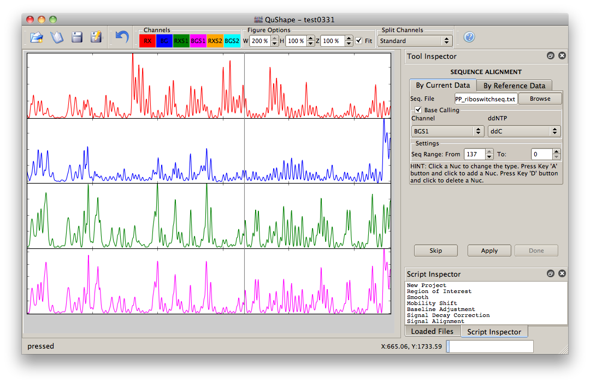

New Project: Use this tool to create a new project
New Project: Use this tool to create a new project
Main window has a lot of features such as plotting data, applying tools, and controlling the project files. When a data file is loaded into the program or selected in the Loaded Files window, it is plotted in the Data View window.
Main window has 4 different parts; Central, top, left, and bottom. The central portion of the window displays data from the selected file. This part has a number of features to display data in ways helpful for the execution of various tools. At top, some figure options is given to display the data in different ways. Some docks on the left parts are used for script inspector, loaded files and log. Each portion is explained din detail below.

In the top of the main window, there is toolbar to apply some tools in a short way. Each items are explained briefly following.
New Project: Use this tool to create a new project
 Open Project: Click this icon to open an existing project
Open Project: Click this icon to open an existing project
 Save Project: Click this to save the project.
Save Project: Click this to save the project.
Save Project as: In order to save the project with different name, click this tool.
 Undo: Use this tool to delete applied tools.
Undo: Use this tool to delete applied tools.
The colored label widgets relate line colors to specific channels. RX, BG, RXS1 and BGS1 channels are plotted in different color. In order to change the color of the channels, Channel Attributes from Option Menu can be used.
Finally in top partition, There are some options to configure the figure. Zoom(Z) SpinBox is used to change the 'y' value of the data. In this way, you can zoom the data and see the small values more closely. The data-file window can also be resized. Width (W) and Height (H) of the figure canvas can be resized. A value of 100 uses one point per pixel. If you check the “Fit to window checkbox widget, the figure is fitted to scroll area.”
Additionally, the Data View Window may be split into 4 individual "views" using Split Channel section. This is especially helpful to view data sets. These options are:
Standard: split the display to view each channel separately
Reaction/Sequencing: will pair the reactions channels (RX and BG) together in the upper half of the data view window and sequences channels (RXS1, BGS1) paired together in the lower half. This is helpful for Signal Alignment.
Capillary: will pair the (+) Reactions channels (RX and RXS1) together in the upper half of the data view window and (-) Reaction channels (BG, BGS1) paired together in the lower half. This option is especially useful to observe the result of Mobility Shift.
One Panel: does not split the channels, or will un-split them.
RXS2 and BGS2 always plotted in the same axes with RXS1 and BGS1, respectively.
There are some dock areas in the user interface. You can activate or deactivate the docs cliking the right-mouse at the top of the user interface.
The Tool Inspector is the consistent user interface to all of the analysis tools in FastShape. Making a selection from the menu will result in the appropriate tool interface being displayed in the panel. The tool can then operate on the data. It is possible to select a tool only after a data file has been loaded. The unique interface of each tool is displayed in the center of the Tool Inspector.
There are four generic buttons for every tool. Available options are indicated in the bottom of the Tool Inspector window: The “Apply” button initiates the execution of the tool. Select this button after making the appropriate settings in the tool. If the result is satisfied by checking the result in data-window, “Done” button should be clicked. The name of the tool will then appear in the Scripting Inspector window and then the next tool will be showed in the tool inspector. The Skip button will cancel the tool as well as any modifications it may have made to the loaded data.
Also, in most tools there are 'Apply to Channel' option. The tool is applied the channel if the channel check box is checked. In addition, a tool can be applied to all data or the data specified by 'Region of interest' spin-box widgets.
The Scripting Inspector displays the sequence of tools applied to the active dataset. It is possible, using this window, to review the effects of the tools used, to restore an earlier state and continue processing. By double-clicking the any script, the output of this script is shown in data window.
The Loaded Files Panel displays a list of all the files that are currently loaded in FastShape. The highlighted file is the current file displayed in the Data View Window. By clicking on a file name it is possible to switch the display from the current file to the newly selected file.
This shows some information generated during analyses.